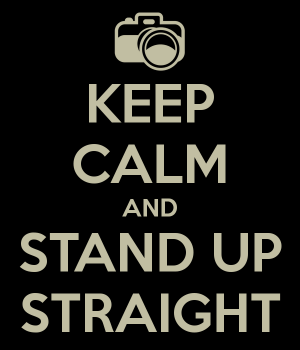

< < < Back
How To Develop Your Presence – Return Of Kings
Everyone remembers that moment they walked into the foyer, maybe in a hotel or a board room, and saw him.
Boom.
A man that had power.
He exuded confidence and that intangible something else that rocks stars, politicians, warlords and the truly successful all have. It didn’t matter if he was wearing a $5,000 suit or blue jeans. People instinctively formed a half circle around him and hinged on his words.
Now fast forward to you. You learned game, became a master of your trade, started lifting weights and lost that extra 20 pounds you picked up in college. But despite all of that something just keeps missing when you walk into the boardroom or get up in front of a crowd.
Welcome to the art of poise.
Poise is typically defined as “graceful and elegant bearing in a person.” In more archaic terms it means “balance or equilibrium.”
The gifted few are born with this. The rest of us have to develop it.
Two Kinds Of Poise
Two forms of this typically exist. We have all met the guy who exudes power like it is pulsing out of his pores. Likewise good performers are often described as magnetic. Literally, you can’t keep your eyes off of them.
Both of these are trained through a similar mechanism with different goals. For purposes of providing some definition to what we are discussing, people who exude power can be referred to as electric. People who you cannot keep your eyes off of can be referred to as magnetic. Even Charles Atlas mentioned a method for “developing a magnetic personality” in his book on dynamic tension.
Going electric tends to make people defer to you and trigger their awareness when you walk into the room. If you need people to view you as the guy in charge this is the way to go. Animals, when you really have this down, will view you as a potential threat and can have some interesting reactions to this. If you decide to practice at a zoo, make sure the beasts can’t get through the guard rails.
On the other hand, going magnetic is what you want to do when you are performing in front of a crowd and need to draw an audience in. Good actors and public speakers do this instinctively.
Get Into Posture

Now to the nuts and bolts of how to generate this effect.
For electric, stand up and balance on the balls of your feet. Curl your tailbone under just a hair and stand perfectly upright as if you are pulling the spine erect from the top of the crown.
Next, while holding your feet in place, apply tension so they want to turn outwards without actually moving.
Finally, hold your arms just below shoulder level straight ahead and push from the end of the fingertips outwards. You should feel all of your joints open.
Now hold this position while breathing softly. After 20-30 seconds you should begin to feel a kind of electric sensation pulsing out of your fingertips. That is the electric sensation.
The magnetic sensation works similarly with a reversal of a few key details.
Stand up and balance on the heels of your feet. Stick your tailbone out just a hair and stand perfectly upright as if you are spreading the spine erect from the base of the head and the sacrum at the same time.
Next, while holding your feet in place, apply tension so they want to turn inwards without actually moving.
Finally, hold your arms just below shoulder level straight ahead and open the joints in your arms as if someone were pulling on your wrists.
Now hold this position while breathing softly. After 20-30 seconds you should begin to feel a kind of magnetic sensation drawing across your skin into your core. That is the magnetic sensation.
Work with these sensations a few times until you can generate them at will. As subtle phenomena, this will take a few tries.
Start Your Power Walk
The most efficient way to work on this is to practice while walking. On a physiological level, this targets the fasciae tissue in the body and when properly performed over time you will begin to feel the fasciae twist around your core as you move.
Get up about an hour early and before showering go outside. It is best to do this when few people are about as the presence of others can easily break your attention and focus.
Working with the electric phenomena is easiest while moving for most people.
This time enter your electric posture with your hand pointed straight into the ground. Now walk with your right hand coming forward and your left foot coming forward. When doing this you are walking left hand-right foot and right hand-left foot.
Other people watching you will simply see someone that is walking with a very straight and focused posture.
Spend 30 minutes a day doing this. Overtime, this tends to creep into how you carry yourself in general. If your back starts to bother you in the meantime, go see a chiropractor.
Your mental state when you practice this is important and tends to influence how people perceive you over time as well. So, if you are always angry when you practice this, people will begin to view you as an angry guy. I have no idea how this works, but I’ve seen this manifest often enough to be aware of it. So when you practice, try to maintain a good, or at least neutral, mood.
Walking while generating the magnetic phenomena takes a little more practice, but given time you will figure it out.
On the plus side doing either method does a good job of properly adjusting the spine and tends to reduce both back pain and the need to have manipulative therapy/chiropractic performed.
After about a week you should notice a difference in how people look at you. You still need to have the rest of your life together to get things done, but people will now give you that first look that gets things started.
Read More: 3 Easy Hacks To Develop A Dominant Presence


{kind=link}
{kind=link}
{kind=link}